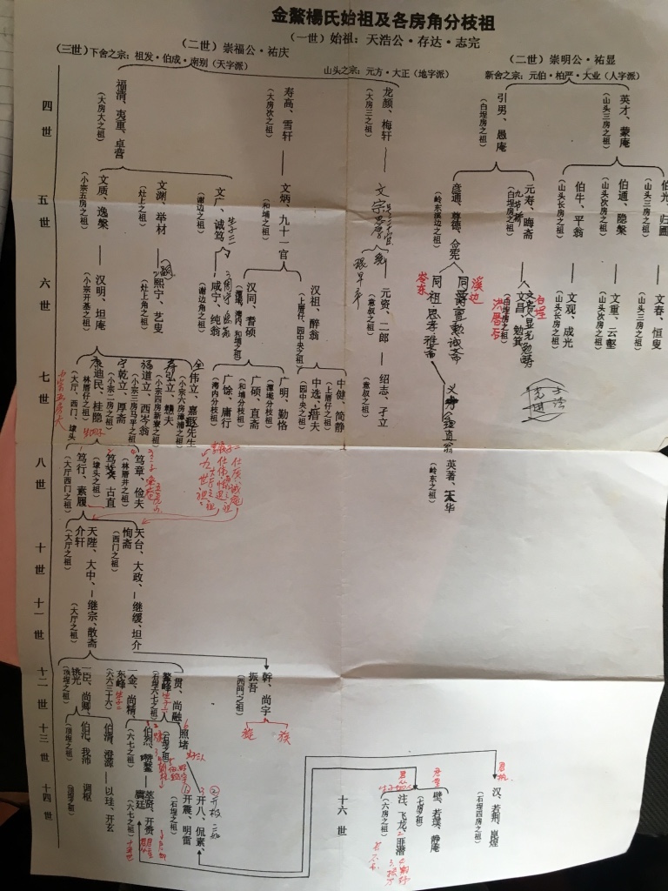

My undergraduate study of History exposed me to a broad-based humanistic education incorporating with Anthropology, Literature, and Philosophy. This gave me a wide perspective to interpret the world. To conduct historical researches, we needed to stay focused on objectivity and never make a hasty judgment. The long-standing practices of evaluating sources of information and identifying diverse interpretations towards historical events enhanced my rational thinking model and capacity for critical thinking.
field work in Fujian Province,2016

Additionally, I conducted fieldworks in several cities and villages in Fujian Province, which provided me with the capability of communicating with people with different backgrounds effectively. I also accumulated much cross-cultural communication experience through my exchange studies in the UK and US. I thus formed my unique ability of content production from my practical experience —I am good at introducing my insight on human and adding cultural elements to my work.